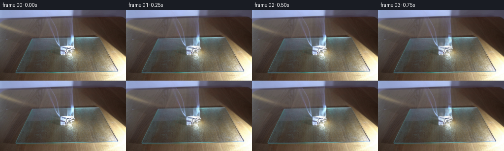

CODING AGENTS AS PIXEL WORLD MODELS
traex/GPT-6.1-Sol · 0140
点击播放 · 原生 RGB 像素
逐轮保存的候选
回放视频、检查图与代码变化。
每份候选均可单独播放。实际图片检查记录在下方工具轨迹中。
候选 01播放与检查图
点击播放 · 原生 RGB 像素

展开代码变化
--- 上一保存版本
+++ 本次保存版本
@@ -0,0 +1,166 @@
+"""Deterministic, locked-off paper combustion with an advecting smoke plume."""
+from pathlib import Path
+import numpy as np
+from PIL import Image, ImageDraw
+from scipy.ndimage import gaussian_filter, map_coordinates
+import artifact_io
+
+ROOT = Path(__file__).resolve().parent
+H, W = 144, 256
+S = 3
+Y, X = np.mgrid[:H, :W].astype(np.float32)
+SY, SX = np.mgrid[:H*S, :W*S].astype(np.float32) / S
+rng = np.random.default_rng(7142)
+
+
+def soft_polygon(points, blur=.65):
+ m = Image.new('L', (W*S, H*S))
+ ImageDraw.Draw(m).polygon([(int(x*S),int(y*S)) for x,y in points], fill=255)
+ a = np.asarray(m).astype(np.float32)/255
+ return gaussian_filter(a, blur*S)[S//2::S, S//2::S]
+
+
+def noise_image(scale, seed):
+ r = np.random.default_rng(seed)
+ n = gaussian_filter(r.normal(0,1,(H*S,W*S)).astype(np.float32),scale*S)
+ return n/(np.std(n)+1.e-6)
+
+noise_coarse = noise_image(2.2, 829)
+noise_fine = noise_image(.55, 32)
+noise_char = gaussian_filter(rng.uniform(0,1,(H,W)).astype(np.float32), .4)
+
+# Puffs are emitted continuously. Their expansion and upward acceleration model
+# entrainment into a hot plume; each puff contains several internal eddies.
+puffs = []
+for stream in range(2):
+ for k in range(107):
+ birth = k*.052 + stream*.021
+ puffs.append((stream,birth,rng.uniform(-1,1),rng.uniform(0,2*np.pi),
+ rng.uniform(.78,1.24),rng.uniform(-.7,.7)))
+
+
+def smoke(t):
+ d = np.zeros((H*S,W*S),np.float32)
+ for stream,birth,jitter,phase,strength,skew in puffs:
+ age=t-birth
+ if age < 0 or age > 5.6:
+ continue
+ # Slower wisps start on the low folded edge; the taller column starts
+ # at the actively burning right corner.
+ x0 = 144.8 if stream == 0 else 132.0
+ y0 = 73.2 if stream == 0 else 80.0
+ rise = (15.8 if stream == 0 else 14.8)*age + 1.0*age*age
+ y = y0-rise
+ drift = (5.0 if stream == 0 else 7.0)*age
+ x = x0-drift + .9*np.sin(age*3.2+phase)*min(age,1.7) + jitter*.75
+ wx = 1.0 + 1.35*age
+ wy = 1.6 + 1.65*age
+ weight = (.067 if stream==0 else .044)*strength * np.exp(-.22*age)
+ # The source produces denser smoke as more of the folded surface chars.
+ weight *= (.78 + .42*min(birth/3.5,1))
+ for j in range(3):
+ angle = phase + age*2.1 + j*2.09
+ px=x + np.cos(angle)*wx*.45
+ py=y + np.sin(angle)*wy*.45
+ xa=max(0,int((px-wx*3.8)*S)); xb=min(W*S,int((px+wx*3.8)*S)+1)
+ ya=max(0,int((py-wy*3.8)*S)); yb=min(H*S,int((py+wy*3.8)*S)+1)
+ if xa>=xb or ya>=yb:
+ continue
+ dx=SX[ya:yb,xa:xb]-px
+ dy=SY[ya:yb,xa:xb]-py
+ ellipse=(dx + (.25+skew*.18)*dy)**2/(wx*wx) + dy*dy/(wy*wy)
+ d[ya:yb,xa:xb] += weight*np.exp(-.5*ellipse)
+ # Fine, advected structure prevents a stack of smooth circular blobs.
+ nc=map_coordinates(noise_coarse,[SY*S+t*12*S,SX*S+t*3*S],order=1,mode='wrap')
+ nf=map_coordinates(noise_fine,[SY*S+t*17*S,SX*S+t*4*S],order=1,mode='wrap')
+ texture=np.clip(.86+.21*nc+.055*nf,.26,1.32)
+ d *= texture
+ alpha=1-np.exp(-d*1.15)
+ # The emitting smoke is white but not self-luminous.
+ shade=np.clip(229 + 6*nc + 2*nf,211,241)
+ smoke_rgb=np.stack([shade*.995,shade,shade*1.008],axis=-1)
+ return alpha,smoke_rgb
+
+
+def generate():
+ first=np.asarray(Image.open(ROOT/'first_frame.png').convert('RGB'),dtype=np.uint8)
+ base=first.astype(np.float32)
+
+ # Isolate light from the combustion area from the stationary cutting board.
+ # The original spatial detail is retained, rather than redrawing the object.
+ back=base.copy()
+ for y in range(46,105):
+ l=np.mean(base[y,115:119],axis=0)
+ r=np.mean(base[y,157:161],axis=0)
+ for x in range(119,158):
+ f=(x-117)/42
+ back[y,x]=l*(1-f)+r*f
+ comb=soft_polygon([(140,47),(149,47),(151,70),(153,79),(156,92),
+ (156,103),(134,103),(125,94),(120,90),(120,73),
+ (136,71),(138,59)],.9)
+ emission=np.maximum(base-back,0)*comb[...,None]
+ plate=base-emission
+
+ char_mask=soft_polygon([(122.5,80.5),(130,80),(135.5,83.5),(139,89.5),
+ (131.5,91.5),(123.5,89)],.7)
+ # A restrained char front spreads from the bottom edge, preserving folds.
+ char_progress=(90-Y)+.30*(X-125)+1.8*np.sin(X*1.8+Y*1.3)
+ frames=[first.copy()]
+ for i in range(1,20):
+ t=i/4
+ # High-frequency flicker is strongest near the flame tip and becomes
+ # zero at the resting paper/board contact.
+ upper=np.clip((75-Y)/22,0,1)
+ lower=np.clip((92-Y)/16,0,1)
+ right=np.clip((X-136)/10,0,1)
+ wav=.58*np.sin(t*13.4)+.31*np.sin(t*22.7+.7)
+ wav2=.55*np.sin(t*17.2+1.2)+.35*np.sin(t*10.7)
+ dx=(upper*(.95*np.sin(t*13+Y*.19)+.4*wav2)*right
+ + .55*lower*np.sin(t*16.1+Y*.42+X*.12))
+ dy=(upper*(2.8*wav+1.1*np.sin(t*18.7+X*.5))*right
+ + .48*lower*np.sin(t*19+X*.31))
+ coords=[Y+dy,X+dx]
+ flame=np.stack([map_coordinates(emission[...,c],coords,order=1,mode='constant') for c in range(3)],axis=-1)
+ intensity=1+.055*np.sin(t*15.7)+.035*np.sin(t*24.8+X*.34+Y*.23)
+ # The burn gradually eats into the paper but remains active throughout.
+ loss=1-.13*(t/4.75)*np.exp(-((X-127)/8)**2-((Y-88)/6)**2)
+ flame*=intensity[...,None]*loss[...,None]
+ img=plate+flame
+ growth=np.clip((t*1.20-char_progress+1.2)*.32,0,1)
+ burn=char_mask*growth*(.29+.26*noise_char)
+ charcoal=np.stack([43+19*noise_char,41+16*noise_char,39+14*noise_char],axis=-1)
+ img=img*(1-burn[...,None])+charcoal*burn[...,None]
+
+ # A little ember glow sits on the charred fold; the dominant flame
+ # remains the white/blue flame present in the starting photograph.
+ ember=np.exp(-((X-(129.2+.5*np.sin(t*6)))/3.1)**2
+ -((Y-(88.0-.2*np.sin(t*7)))/.65)**2)
+ ember*=.09*(.7+.3*np.sin(t*12))*(.25+.75*t/4.75)
+ img += ember[...,None]*np.array([152,40,2],np.float32)
+
+ # Very localized warm light breathes on the glass, with no camera or
+ # exposure movement and no motion in the surrounding setup.
+ reflection=np.exp(-((X-150)/15)**2-((Y-97)/11)**2)
+ img+=reflection[...,None]*np.array([4.0,2.4,.6])*(np.sin(t*15.7)*.65+np.sin(t*7.3)*.35)
+
+ # Subpixel optical distortion is confined to the rising hot air.
+ heat=np.exp(-((X-141)/12)**2-((Y-62)/16)**2)*np.clip(t/.6,0,1)
+ refr_x=.30*np.sin(Y*.6+t*14)*heat
+ refr_y=.13*np.sin(X*.8+t*18)*heat
+ img=np.stack([map_coordinates(img[...,c],[Y+refr_y,X+refr_x],order=1,mode='nearest') for c in range(3)],-1)
+ big=np.asarray(Image.fromarray(np.clip(img,0,255).astype(np.uint8)).resize((W*S,H*S),Image.Resampling.BICUBIC)).astype(np.float32)
+ a,sm=smoke(t)
+ big=big*(1-a[...,None])+sm*a[...,None]
+ out=np.asarray(Image.fromarray(np.clip(big,0,255).astype(np.uint8)).resize((W,H),Image.Resampling.LANCZOS)).copy()
+ # Preserve all pixels outside the optical effect support exactly.
+ support=(comb>1e-5)|(char_mask>1e-5)|(heat>.003)|(reflection>.003)
+ a_native=np.asarray(Image.fromarray(np.clip(a*255,0,255).astype(np.uint8)).resize((W,H),Image.Resampling.BILINEAR))
+ support|=a_native>0
+ out[~support]=first[~support]
+ frames.append(out)
+ return np.stack(frames)
+
+
+if __name__=='__main__':
+ result=generate()
+ artifact_io.save(result,ROOT)
候选 02播放与检查图
点击播放 · 原生 RGB 像素

展开代码变化
--- 上一保存版本
+++ 本次保存版本
@@ -148,14 +148,15 @@
refr_x=.30*np.sin(Y*.6+t*14)*heat
refr_y=.13*np.sin(X*.8+t*18)*heat
img=np.stack([map_coordinates(img[...,c],[Y+refr_y,X+refr_x],order=1,mode='nearest') for c in range(3)],-1)
- big=np.asarray(Image.fromarray(np.clip(img,0,255).astype(np.uint8)).resize((W*S,H*S),Image.Resampling.BICUBIC)).astype(np.float32)
a,sm=smoke(t)
- big=big*(1-a[...,None])+sm*a[...,None]
- out=np.asarray(Image.fromarray(np.clip(big,0,255).astype(np.uint8)).resize((W,H),Image.Resampling.LANCZOS)).copy()
+ # Integrate the high-resolution volume onto the camera pixels without
+ # resampling the fixed photographic background.
+ a_low=a.reshape(H,S,W,S).mean(axis=(1,3))
+ smoke_low=(sm*a[...,None]).reshape(H,S,W,S,3).mean(axis=(1,3))
+ out=np.rint(np.clip(img*(1-a_low[...,None])+smoke_low,0,255)).astype(np.uint8)
# Preserve all pixels outside the optical effect support exactly.
support=(comb>1e-5)|(char_mask>1e-5)|(heat>.003)|(reflection>.003)
- a_native=np.asarray(Image.fromarray(np.clip(a*255,0,255).astype(np.uint8)).resize((W,H),Image.Resampling.BILINEAR))
- support|=a_native>0
+ support|=a_low>.001
out[~support]=first[~support]
frames.append(out)
return np.stack(frames)
候选 03播放与检查图
可观测工具轨迹
实际执行的命令与返回图片。
命令 1exit 0
/bin/bash -lc 'ls -la && cat prompt.txt && cat GENERATION_RULES.md'
命令 2exit 0
/bin/bash -lc "cat artifact_io.py && python - <<'PY'
from PIL import Image
import numpy as np
im=np.asarray(Image.open('first_frame.png'));print(im.shape)
# coarse RGB and luminance categorized map
im=np.array(Image.fromarray(im).resize((96,54)))
for row in im:
s=''
for r,g,b in row.astype(float):
mx=max(r,g,b);mn=min(r,g,b)
if mx<40:c=' '
elif mx-mn<20:c='.' if mx<90 else ':' if mx<140 else '+' if mx<190 else '#' if mx<230 else '@'
elif r>g*1.25 and r>b*1.5:c='R' if r>160 else 'r'
elif r>b*1.4 and g>b*1.25:c='Y' if r>190 else 'y'
elif b>r*1.2:c='B'
elif g>r*1.2:c='G'
else:c='o'
s+=c
print(s)
PY"命令 3exit 0
/bin/bash -lc "python - <<'PY'
from PIL import Image
import numpy as np
im=np.array(Image.open('first_frame.png'))
print('Sample coordinates RGB')
for y in [0,10,20,30,40,50,60,70,80,90,100,110,120,130,140]:
print(y,[(x,im[y,x].tolist()) for x in [0,20,40,60,80,100,120,140,160,180,200,220,240,255]])
print('\\nRGB feature map 128x72: W=bright neutral /a=blue light b=blue dark /= flame gold, O=orange/')
a=np.array(Image.open('first_frame.png').resize((128,72)))
for y,row in enumerate(a):
s=''
for r,g,b in row.astype(float):
br=(r+g+b)/3
if br>215:c='W'
elif r>180 and r>g*1.15 and g>b*1.25:c='O'
elif r>160 and g>130 and b<110:c='Y'
elif r>150 and g>140 and b<130:c='y'
elif b>r*1.15 and b>g*1.08:c='a' if br>135 else 'b' if br>75 else 'd'
elif r>g*1.20 and r>b*1.4:c='t' if br>80 else 'r'
else:c='@' if br>185 else '#' if br>155 else '+' if br>125 else ':' if br>95 else '.' if br>65 else '-' if br>35 else ' '
s+=c
print('%3d '%(y*2)+s)
PY"命令 4exit 0
/bin/bash -lc "python - <<'PY'
from PIL import Image
import numpy as np
im=np.array(Image.open('first_frame.png'))
for y in range(36,103):
s=''
for x in range(102,162):
r,g,b=im[y,x].astype(float);v=(r+g+b)/3
c=' '
if v>235:c='@'
elif v>210:c='W'
elif v>185:c='#'
elif v>160:c='O'
elif v>135:c='o'
elif v>110:c='+'
elif v>85:c=':'
elif v>60:c='.'
else:c='-'
s+=c
print(str(y).rjust(3),s)
print('patch values')
for y in [40,48,55,60,65,70,74,78,82,86,90,94,98]:
print(y,[(x,im[y,x].tolist()) for x in range(120,156,3)])
PY"命令 5exit 0
/bin/bash -lc "python - <<'PY'
from PIL import Image
import numpy as np
im=np.asarray(Image.open('first_frame.png')).astype(float)
# detailed quantized light around object including blue bands
for y in range(45,97):
s=''
for x in range(55,158):
r,g,b=im[y,x]; v=(r+g+b)/3
if r>230 and g>230: c='@'
elif b>210 and b>r+25:c='A'
elif b>180 and b>r+25:c='B'
elif b>150 and b>r+20:c='b'
elif b>120 and b>r+15:c='c'
elif b>g+12 and b>r+10:c='s'
elif v>210:c='W'
elif v>180:c='#'
elif v>150:c='O'
elif v>120:c='+'
elif v>95:c=':'
elif v>75:c='.'
else:c=' '
s+=c
print('%2d '%y+s)
PY"命令 6exit 0
/bin/bash -lc "python - <<'PY'
import numpy as np
from PIL import Image
im=np.array(Image.open('first_frame.png'))
# full resolution luminance for upper object patch
for y in range(0,75,2):
s=''
for x in range(90,154):
r,g,b=im[y,x].astype(float); v=(r+g+b)/3
c='@' if v>230 else 'W' if v>205 else '#' if v>180 else 'O' if v>155 else '+' if v>130 else ':' if v>105 else '.' if v>80 else '-' if v>55 else ' '
s+=c
print('%3d '%y+s)
PY"命令 7exit 0
/bin/bash -lc "python - <<'PY'
import numpy as np
from PIL import Image
im=np.asarray(Image.open('first_frame.png'))
# paper cropped quantization small tokens each pixel; rg color of bright pixels summarized rows
for y in range(70,93):
print(y, ' '.join('%3d'%x for x in []),[(x,tuple(im[y,x])) for x in range(121,153) if im[y,x].mean()>225])
PY"命令 8exit 0
/bin/bash -lc "python - <<'PY' import importlib.util for s in ['numpy','scipy','PIL','cv2']: print(s, bool(importlib.util.find_spec(s))) PY"
命令 9exit 0
/bin/bash -lc "cat > generate.py <<'PY'
\"\"\"Deterministic, locked-off paper combustion with an advecting smoke plume.\"\"\"
from pathlib import Path
import numpy as np
from PIL import Image, ImageDraw
from scipy.ndimage import gaussian_filter, map_coordinates
import artifact_io
ROOT = Path(__file__).resolve().parent
H, W = 144, 256
S = 3
Y, X = np.mgrid[:H, :W].astype(np.float32)
SY, SX = np.mgrid[:H*S, :W*S].astype(np.float32) / S
rng = np.random.default_rng(7142)
def soft_polygon(points, blur=.65):
m = Image.new('L', (W*S, H*S))
ImageDraw.Draw(m).polygon([(int(x*S),int(y*S)) for x,y in points], fill=255)
a = np.asarray(m).astype(np.float32)/255
return gaussian_filter(a, blur*S)[S//2::S, S//2::S]
def noise_image(scale, seed):
r = np.random.default_rng(seed)
n = gaussian_filter(r.normal(0,1,(H*S,W*S)).astype(np.float32),scale*S)
return n/(np.std(n)+1.e-6)
noise_coarse = noise_image(2.2, 829)
noise_fine = noise_image(.55, 32)
noise_char = gaussian_filter(rng.uniform(0,1,(H,W)).astype(np.float32), .4)
# Puffs are emitted continuously. Their expansion and upward acceleration model
# entrainment into a hot plume; each puff contains several internal eddies.
puffs = []
for stream in range(2):
for k in range(107):
birth = k*.052 + stream*.021
puffs.append((stream,birth,rng.uniform(-1,1),rng.uniform(0,2*np.pi),
rng.uniform(.78,1.24),rng.uniform(-.7,.7)))
def smoke(t):
d = np.zeros((H*S,W*S),np.float32)
for stream,birth,jitter,phase,strength,skew in puffs:
age=t-birth
if age < 0 or age > 5.6:
continue
# Slower wisps start on the low folded edge; the taller column starts
# at the actively burning right corner.
x0 = 144.8 if stream == 0 else 132.0
y0 = 73.2 if stream == 0 else 80.0
rise = (15.8 if stream == 0 else 14.8)*age + 1.0*age*age
y = y0-rise
drift = (5.0 if stream == 0 else 7.0)*age
x = x0-drift + .9*np.sin(age*3.2+phase)*min(age,1.7) + jitter*.75
wx = 1.0 + 1.35*age
wy = 1.6 + 1.65*age
weight = (.067 if stream==0 else .044)*strength * np.exp(-.22*age)
# The source produces denser smoke as more of the folded surface chars.
weight *= (.78 + .42*min(birth/3.5,1))
for j in range(3):
angle = phase + age*2.1 + j*2.09
px=x + np.cos(angle)*wx*.45
py=y + np.sin(angle)*wy*.45
xa=max(0,int((px-wx*3.8)*S)); xb=min(W*S,int((px+wx*3.8)*S)+1)
ya=max(0,int((py-wy*3.8)*S)); yb=min(H*S,int((py+wy*3.8)*S)+1)
if xa>=xb or ya>=yb:
continue
dx=SX[ya:yb,xa:xb]-px
dy=SY[ya:yb,xa:xb]-py
ellipse=(dx + (.25+skew*.18)*dy)**2/(wx*wx) + dy*dy/(wy*wy)
d[ya:yb,xa:xb] += weight*np.exp(-.5*ellipse)
# Fine, advected structure prevents a stack of smooth circular blobs.
nc=map_coordinates(noise_coarse,[SY*S+t*12*S,SX*S+t*3*S],order=1,mode='wrap')
nf=map_coordinates(noise_fine,[SY*S+t*17*S,SX*S+t*4*S],order=1,mode='wrap')
texture=np.clip(.86+.21*nc+.055*nf,.26,1.32)
d *= texture
alpha=1-np.exp(-d*1.15)
# The emitting smoke is white but not self-luminous.
shade=np.clip(229 + 6*nc + 2*nf,211,241)
smoke_rgb=np.stack([shade*.995,shade,shade*1.008],axis=-1)
return alpha,smoke_rgb
def generate():
first=np.asarray(Image.open(ROOT/'first_frame.png').convert('RGB'),dtype=np.uint8)
base=first.astype(np.float32)
# Isolate light from the combustion area from the stationary cutting board.
# The original spatial detail is retained, rather than redrawing the object.
back=base.copy()
for y in range(46,105):
l=np.mean(base[y,115:119],axis=0)
r=np.mean(base[y,157:161],axis=0)
for x in range(119,158):
f=(x-117)/42
back[y,x]=l*(1-f)+r*f
comb=soft_polygon([(140,47),(149,47),(151,70),(153,79),(156,92),
(156,103),(134,103),(125,94),(120,90),(120,73),
(136,71),(138,59)],.9)
emission=np.maximum(base-back,0)*comb[...,None]
plate=base-emission
char_mask=soft_polygon([(122.5,80.5),(130,80),(135.5,83.5),(139,89.5),
(131.5,91.5),(123.5,89)],.7)
# A restrained char front spreads from the bottom edge, preserving folds.
char_progress=(90-Y)+.30*(X-125)+1.8*np.sin(X*1.8+Y*1.3)
frames=[first.copy()]
for i in range(1,20):
t=i/4
# High-frequency flicker is strongest near the flame tip and becomes
# zero at the resting paper/board contact.
upper=np.clip((75-Y)/22,0,1)
lower=np.clip((92-Y)/16,0,1)
right=np.clip((X-136)/10,0,1)
wav=.58*np.sin(t*13.4)+.31*np.sin(t*22.7+.7)
wav2=.55*np.sin(t*17.2+1.2)+.35*np.sin(t*10.7)
dx=(upper*(.95*np.sin(t*13+Y*.19)+.4*wav2)*right
+ .55*lower*np.sin(t*16.1+Y*.42+X*.12))
dy=(upper*(2.8*wav+1.1*np.sin(t*18.7+X*.5))*right
+ .48*lower*np.sin(t*19+X*.31))
coords=[Y+dy,X+dx]
flame=np.stack([map_coordinates(emission[...,c],coords,order=1,mode='constant') for c in range(3)],axis=-1)
intensity=1+.055*np.sin(t*15.7)+.035*np.sin(t*24.8+X*.34+Y*.23)
# The burn gradually eats into the paper but remains active throughout.
loss=1-.13*(t/4.75)*np.exp(-((X-127)/8)**2-((Y-88)/6)**2)
flame*=intensity[...,None]*loss[...,None]
img=plate+flame
growth=np.clip((t*1.20-char_progress+1.2)*.32,0,1)
burn=char_mask*growth*(.29+.26*noise_char)
charcoal=np.stack([43+19*noise_char,41+16*noise_char,39+14*noise_char],axis=-1)
img=img*(1-burn[...,None])+charcoal*burn[...,None]
# A little ember glow sits on the charred fold; the dominant flame
# remains the white/blue flame present in the starting photograph.
ember=np.exp(-((X-(129.2+.5*np.sin(t*6)))/3.1)**2
-((Y-(88.0-.2*np.sin(t*7)))/.65)**2)
ember*=.09*(.7+.3*np.sin(t*12))*(.25+.75*t/4.75)
img += ember[...,None]*np.array([152,40,2],np.float32)
# Very localized warm light breathes on the glass, with no camera or
# exposure movement and no motion in the surrounding setup.
reflection=np.exp(-((X-150)/15)**2-((Y-97)/11)**2)
img+=reflection[...,None]*np.array([4.0,2.4,.6])*(np.sin(t*15.7)*.65+np.sin(t*7.3)*.35)
# Subpixel optical distortion is confined to the rising hot air.
heat=np.exp(-((X-141)/12)**2-((Y-62)/16)**2)*np.clip(t/.6,0,1)
refr_x=.30*np.sin(Y*.6+t*14)*heat
refr_y=.13*np.sin(X*.8+t*18)*heat
img=np.stack([map_coordinates(img[...,c],[Y+refr_y,X+refr_x],order=1,mode='nearest') for c in range(3)],-1)
big=np.asarray(Image.fromarray(np.clip(img,0,255).astype(np.uint8)).resize((W*S,H*S),Image.Resampling.BICUBIC)).astype(np.float32)
a,sm=smoke(t)
big=big*(1-a[...,None])+sm*a[...,None]
out=np.asarray(Image.fromarray(np.clip(big,0,255).astype(np.uint8)).resize((W,H),Image.Resampling.LANCZOS)).copy()
# Preserve all pixels outside the optical effect support exactly.
support=(comb>1e-5)|(char_mask>1e-5)|(heat>.003)|(reflection>.003)
a_native=np.asarray(Image.fromarray(np.clip(a*255,0,255).astype(np.uint8)).resize((W,H),Image.Resampling.BILINEAR))
support|=a_native>0
out[~support]=first[~support]
frames.append(out)
return np.stack(frames)
if __name__=='__main__':
result=generate()
artifact_io.save(result,ROOT)
PY
python generate.py
python - <<'PY'
from PIL import Image
import numpy as np
f=np.array([np.array(Image.open('frames/%02d.png'%i)) for i in range(20)])
a=np.array(Image.open('first_frame.png'))
print('shape',f.shape,'identical start',np.array_equal(a,f[0]))
for i in [1,4,8,12,16,19]:
d=np.abs(f[i].astype(float)-a)
print(i,'change',d.mean(),'max',d.max(),'count',np.any(d,axis=2).sum(), 'smoke rows means',[(y,f[i,y,105:150].mean()-a[y,105:150].mean()) for y in [10,20,30,40,50,60]])
PY"命令 10exit 0
/bin/bash -lc "python - <<'PY'
import numpy as np
from PIL import Image
b=np.array(Image.open('first_frame.png')).astype(float)
f=np.array(Image.open('frames/19.png')).astype(float)
# shade and smoke white difference downsampled 2x over ROI 85..160,y0..94
for y in range(0,96,2):
s=''
for x in range(88,164,2):
d=(f[y:y+2,x:x+2]-b[y:y+2,x:x+2]).mean()
c=' ' if d<2 else '.' if d<8 else ':' if d<18 else '+' if d<35 else 'o' if d<55 else '#' if d<75 else 'W' if d<95 else '@'
s+=c
print('%3d '%y+s)
PY"命令 11exit 0
/bin/bash -lc "python - <<'PY'
p='generate.py'
s=open(p).read()
s=s.replace(\" big=np.asarray(Image.fromarray(np.clip(img,0,255).astype(np.uint8)).resize((W*S,H*S),Image.Resampling.BICUBIC)).astype(np.float32)\\n a,sm=smoke(t)\\n big=big*(1-a[...,None])+sm*a[...,None]\\n out=np.asarray(Image.fromarray(np.clip(big,0,255).astype(np.uint8)).resize((W,H),Image.Resampling.LANCZOS)).copy()\", \" a,sm=smoke(t)\\n # Integrate the high-resolution volume onto the camera pixels without\\n # resampling the fixed photographic background.\\n a_low=a.reshape(H,S,W,S).mean(axis=(1,3))\\n smoke_low=(sm*a[...,None]).reshape(H,S,W,S,3).mean(axis=(1,3))\\n out=np.rint(np.clip(img*(1-a_low[...,None])+smoke_low,0,255)).astype(np.uint8)\")
s=s.replace(\" a_native=np.asarray(Image.fromarray(np.clip(a*255,0,255).astype(np.uint8)).resize((W,H),Image.Resampling.BILINEAR))\\n support|=a_native>0\", \" support|=a_low>.001\")
open(p,'w').write(s)
PY
python generate.py
python - <<'PY'
import numpy as np
from PIL import Image
b=np.array(Image.open('first_frame.png'))
for i in [0,1,4,8,12,16,19]:
f=np.array(Image.open('frames/%02d.png'%i));d=f.astype(float)-b
print(i, 'MAE %.3f'%np.abs(d).mean(),'changed',np.any(d,axis=2).sum(),'global maximum',d.max())
# dynamic location
if i==1:
idx=np.where(np.max(np.abs(d),axis=2)>20)
print('dynamic bounding box',idx[1].min(),idx[0].min(),idx[1].max(),idx[0].max())
PY"保存候选 3 份；完成命令 11 次；可验证图片返回 0 张。原始 API 响应与完整日志保留在本地。